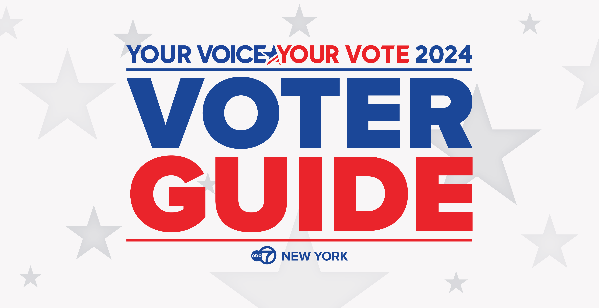
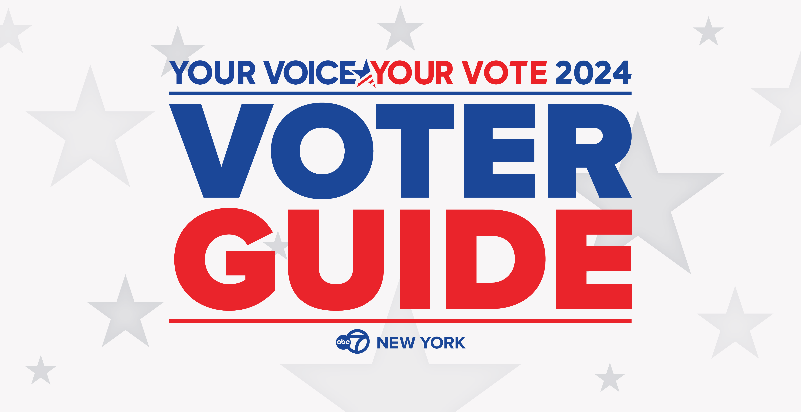
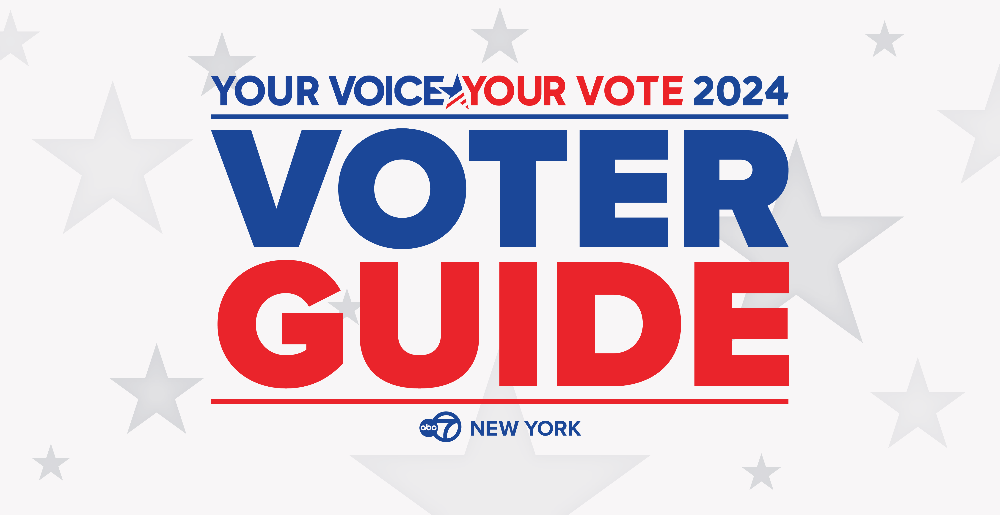
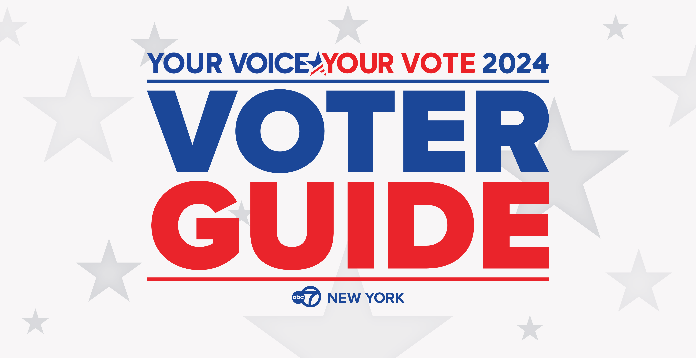

The countdown is on to the 2024 election, which will be held on Tuesday, November 5.
Voters will head to the polls in New Jersey to vote for the president and vice president of the United States, as well as several important local elections – including New Jersey’s Senate seat.
October 15
October 26
November 5
The voter registration deadline for the General Election in New Jersey is 21 days before the election -- October 15.
Voters can register online or by filling out a paper registration form.
To register in New Jersey, you must be a United States citizen, at least 17 years old, though you may not vote until you have reached the age of 18, and a resident of the county for 30 days before the election.
Early voting begins in the Garden State on Saturday, October 26.
Every county will designate in-person early voting locations that will be open Saturday, October 26, 2024 – Sunday, November 3, 2024.
Hours will be Monday-Saturday, 10:00 a.m.–8:00 p.m. and Sunday, 10:00 a.m.–6:00 p.m. No appointment is necessary.
Voters will also be able to return their vote-by-mail ballots early at a secure ballot drop box, via mail, or in person to their Board of Elections office.
Click here for more information on early voting and poll locations.